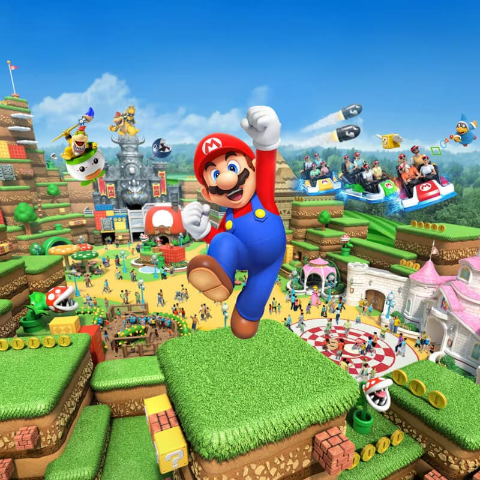
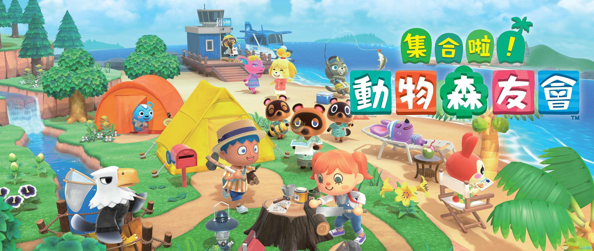
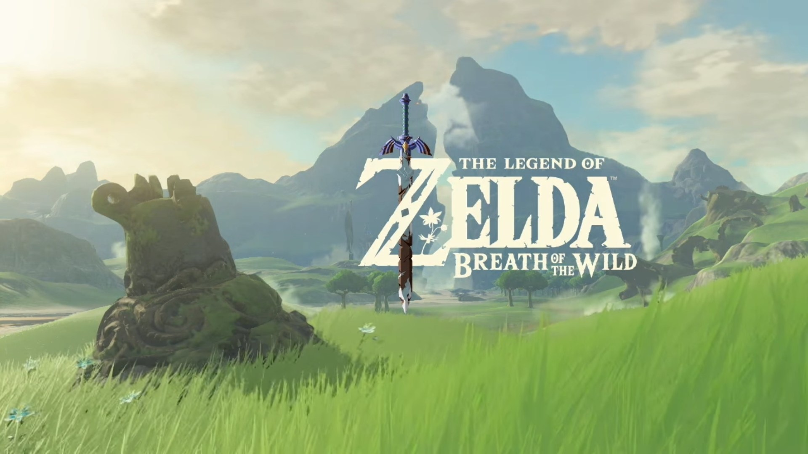
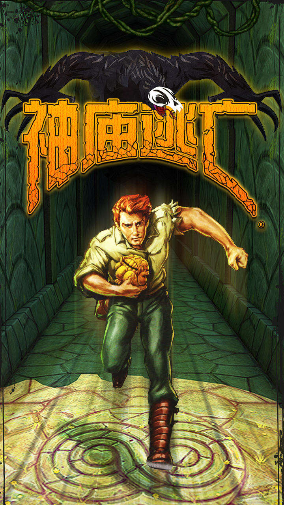
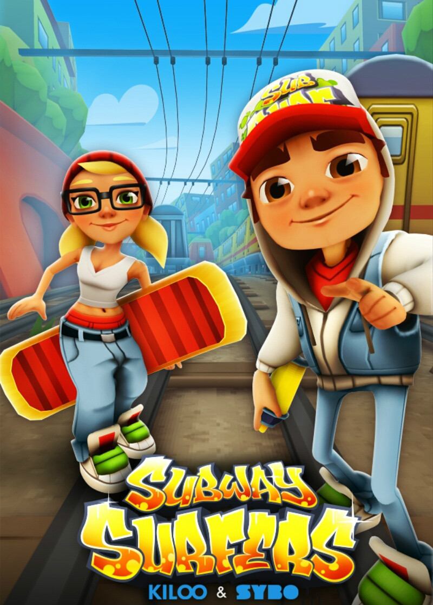

01 / TITLE + IDEA
Run, little one!
A 3D low-poly fairy-tale chase parkour demo. The player enters a
fairy-tale world and is chased by a wolf.
- Core actions: automatic running, lane switching, jumping, sliding, and obstacle avoidance.
- Goal: a simple playable game demo with start, chase, failure, restart, and ending flow.
- Production: Unreal Engine 5 and AI-assisted generation for low-poly assets, environments, and prop variations.
- AI support also covers animation rigging, interaction logic, and related technical tasks.
- Art direction: low-poly fairy tale, natural environments, and a warm, readable world.
02 / INSPIRATION
Fairy tales and low-poly worlds
- Story inspiration: The Three Little Pigs and Little Red Riding Hood.
- Visual references: Nintendo-style low-poly worlds, The Legend of Zelda, and Animal Crossing.
- Gameplay inspiration: Temple Run and Subway Surfers. Simple to understand, but still challenging.
- Environment elements: trees, grass, flowers, animals, brick houses, forest paths, and rural buildings.
- Design purpose: familiar fairy-tale symbols immediately communicate the world, goal, and chase relationship.
VISUAL REFERENCES

Low-poly exploration world

Warm character-driven world

Open fantasy landscape and atmosphere
INSPIRATION SOURCES

Chase and escape tension

Fast endless-runner rhythm
03 / CREATIVE MOTIVATION
Learning through a complete demo
With no previous game development experience, I want to learn the
full game production process through one clearly scoped demo.
- Scope: one main character, one pursuer, one core route, and a complete start-to-end flow.
- Learning focus: game art, level design, animation, interaction, and packaging.
- AI assistance reduces modelling time and technical barriers.
- Human control remains responsible for selection, visual consistency, and final quality.
- Priority: complete and playable first, then refine visual details.
04 / ARTISTIC PLAN — PATHWAY
Chase parkour in a fairy-tale forest
The Game Art direction is low-poly, fairy-tale, toy-like, and
handcrafted, with a warm and readable natural world.
- Environment: forests, grass, flowers, animals, wooden cabins, brick houses, and natural paths.
- Player and wolf remain distinct through silhouette, colour, and movement.
- Level rhythm: calm introduction → chase begins → obstacles increase → short pause → final escape.
- Interface: start screen, control prompts, failure screen, and final result screen.
- Complete demo: tutorial, one level, failure reset, finish result, and ending screen.
- Future expansion: coins unlock characters, and each character provides a different parkour skill.
05 / TOOLS AND PRODUCTION
UE5, Blueprints, and AI assistance
Unreal Engine 5 is the core production environment, with Blueprints
used for the main parkour and chase logic.
- AI-assisted model generation: low-poly bases, environment elements, props, and material directions.
- Blender refinement: proportion, structure, topology, and texture adjustments.
- Production order: greybox → parkour system → chase system → AI modelling → environment → lighting → animation → testing.
- Interface design: Figma for start, tutorial, failure, and completion screens.
- Human responsibility: visual consistency, model quality, level pacing, and asset checks.
06 / CORE QUESTIONS
Core Questions
- Can I reduce the emphasis on visual presentation in order to prioritise interaction?
- Can I use existing assets, such as free and open-source models, rigged characters, and animations?
I would also appreciate any suggestions from the teacher regarding this project.